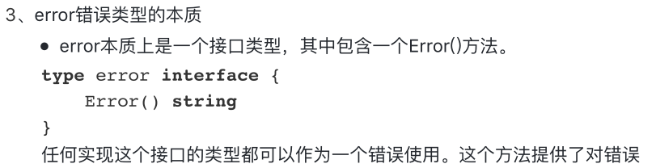

原文出处:本文由博客园博主小禾点点提供。
原文连接:https://www.cnblogs.com/jalja/p/11817447.html
原文连接:https://www.cnblogs.com/jalja/p/11817447.html
一、异常
1、 错误指程序中出现不正常的情况，从而导致程序无法正常执行。
•大多语言中使用try... catch... finally语句执行。
假设我们正在尝试打开一个文件，文件系统中不存在这个文件。这是一个异常情况，它表示为一个错误。
2、 Go语言中没有try...catch
- • Go语言通过内置的错误类型提供了非常简单的错误处理机制。
- •错误值可以存储在变量中，通过函数中返回。
- 如果一个函数或方法返回一个错误，按照惯例，它必须是函数返回的最后一个值。
- •处理错误的惯用方式是将返回的错误与nil进行比较。
- nil值表示没有发生错误，而非nil值表示出现错误。
- •如果不是nil,需打印输出错误。
go中error的源码
package errors
// New returns an error that formats as the given text.
// Each call to New returns a distinct error value even if the text is identical.
func New(text string) error {
return &errorString{text}
}
// errorString is a trivial implementation of error.
type errorString struct {
s string
}
func (e *errorString) Error() string {
return e.s
}
二、go中的异常处理



package main
import (
"math"
"fmt"
"os"
"github.com/pkg/errors"
)
func main() {
// 异常情况1
res := math.Sqrt(-100)
fmt.Println(res)
res , err := Sqrt(-100)
if err != nil {
fmt.Println(err)
} else {
fmt.Println(res)
}
//异常情况2
//res = 100 / 0
//fmt.Println(res)
res , err = Divide(100 , 0)
if err != nil {
fmt.Println(err.Error())
} else {
fmt.Println(res)
}
//异常情况3
f, err := os.Open("/abc.txt")
if err != nil {
fmt.Println(err)
} else {
fmt.Println(f.Name() , "该文件成功被打开！")
}
}
//定义平方根运算函数
func Sqrt(f float64)(float64 , error) {
if f<0 {
return 0 , errors.New("负数不可以获取平方根")
} else {
return math.Sqrt(f) , nil
}
}
//定义除法运算函数
func Divide(dividee float64 , divider float64)(float64 , error) {
if divider == 0 {
return 0 , errors.New("出错：除数不可以为0！")
} else {
return dividee / divider , nil
}
}go中error的创建方式
//error创建方式一
func Sqrt(f float64)(float64 , error) {
if f<0 {
return 0 , errors.New("负数不可以获取平方根")
} else {
return math.Sqrt(f) , nil
}
}
//error创建方式二；设计一个函数：验证年龄。如果是负数，则返回error
func checkAge(age int) (string, error) {
if age < 0 {
err := fmt.Errorf("您的年龄输入是：%d ， 该数值为负数，有错误！", age)
return "", err
} else {
return fmt.Sprintf("您的年龄输入是：%d ", age), nil
}
}四、自定义错误
• 1、定义一个结构体，表示自定义错误的类型
• 2、让自定义错误类型实现error接口的方法：Error() string
• 3、定义一个返回error的函数。根据程序实际功能而定。
package main
import (
"time"
"fmt"
)
//1、定义结构体，表示自定义错误的类型
type MyError struct {
When time.Time
What string
}
//2、实现Error()方法
func (e MyError) Error() string {
return fmt.Sprintf("%v : %v", e.When, e.What)
}
//3、定义函数，返回error对象。该函数求矩形面积
func getArea(width, length float64) (float64, error) {
errorInfo := ""
if width < 0 && length < 0 {
errorInfo = fmt.Sprintf("长度：%v, 宽度：%v ， 均为负数", length, width)
} else if length < 0 {
errorInfo = fmt.Sprintf("长度：%v, 出现负数 ", length)
} else if width < 0 {
errorInfo = fmt.Sprintf("宽度：%v ， 出现负数", width)
}
if errorInfo != "" {
return 0, MyError{time.Now(), errorInfo}
} else {
return width * length, nil
}
}
func main() {
res , err := getArea(-4, -5)
if err != nil {
fmt.Printf(err.Error())
} else {
fmt.Println("面积为：" , res)
}
}